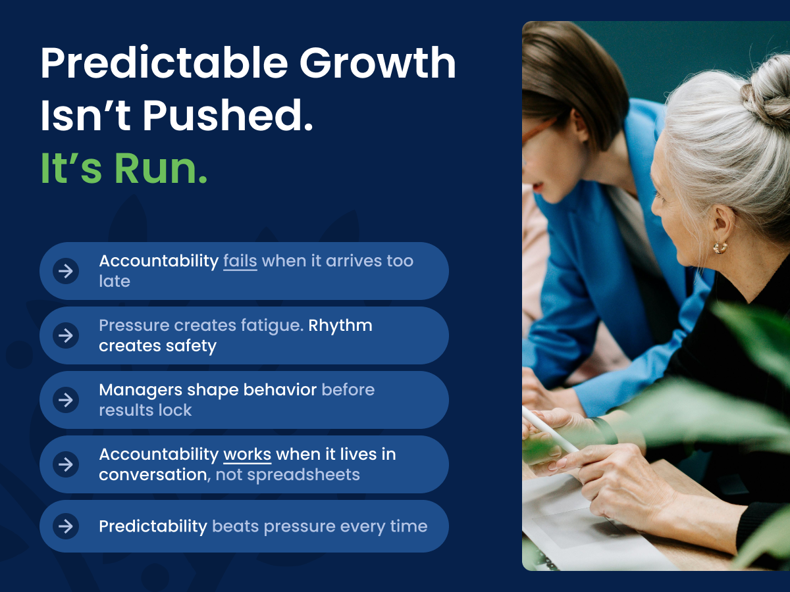
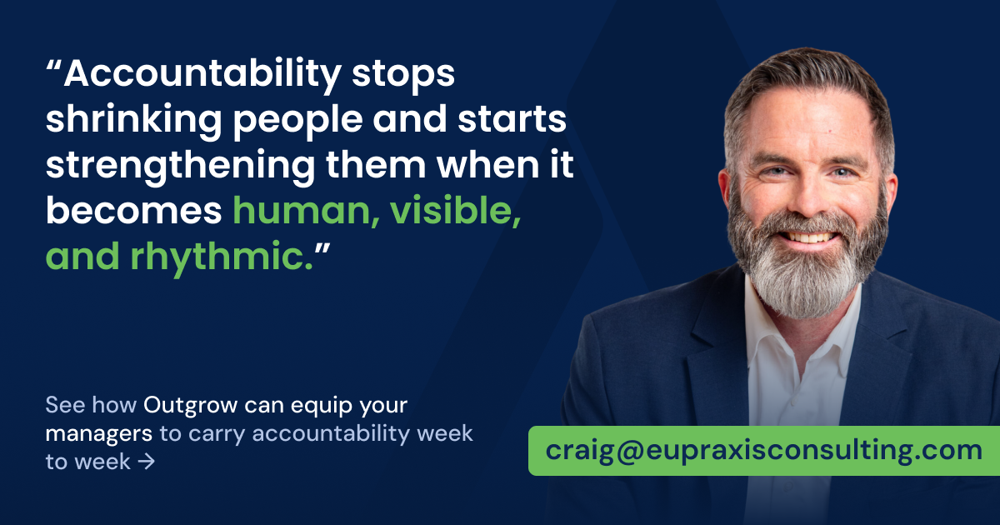
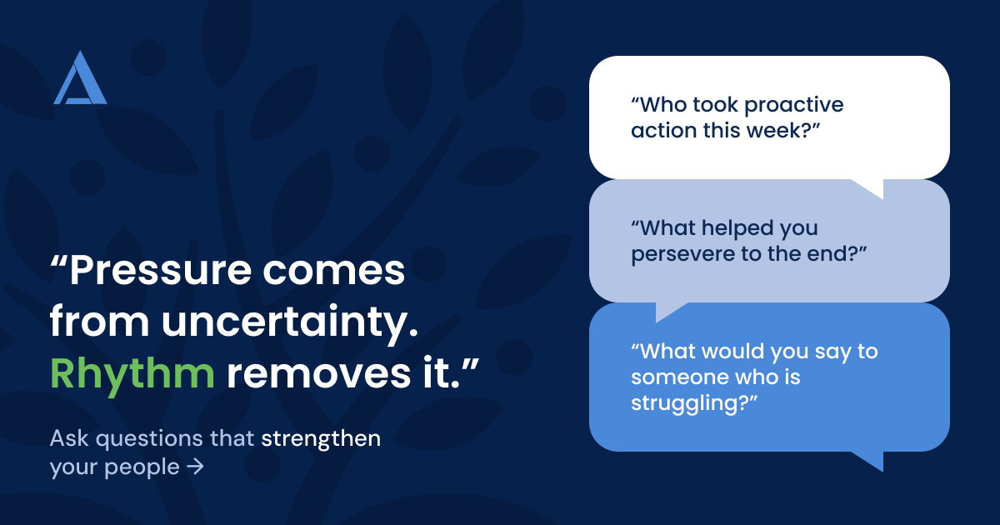
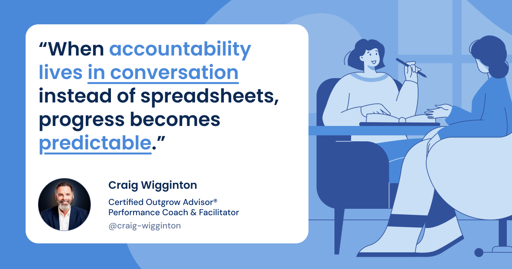

From CEO to Chief Belief Officer: How a Leader’s Belief Powers the System
When CEOs step back, belief fades. Learn how shifting from CEO to Chief Belief Officer keeps culture, managers, and growth systems energized.
ReadRun Outgrow · CEO series, part 4

This article is part four of our CEO Series where we explore how managers turn proactive belief into a simple weekly rhythm that drives consistent, measurable growth.
You probably hear the word “accountability” a lot in your company.
You believe in it.
Your leaders believe in it.
Your teams say they want it.
Yet if you look closely at how accountability actually shows up, it is often at the very end of the process. It appears in the monthly review, the quarterly report, or a tense conversation about what did not happen after it is already too late to change it.
That is postmortem accountability. You are analyzing results instead of guiding behaviors. It feels like leadership, but it functions like triage.
Teams brace for review meetings. Managers spend more time explaining outcomes than shaping them. Measurement becomes something people endure rather than something that helps them grow.
The harder you push for “accountability,” the more fatigue you create.
People are not fighting you. They are tired. They associate measurement with punishment, not progress. Over time, that stress pushes everyone back into hope-based growth. They work hard, wait for results, and quietly hope next quarter will be better.
The problem is not that accountability exists. The problem is that it is rare, reactive, and late. What’s missing isn’t accountability itself — it’s manager accountability, practiced early enough and often enough to shape behavior before results are locked in.

Manager accountability is not a spreadsheet problem. It is a relationship problem.
Most companies treat it like a transaction. Charts, deadlines, dashboards. Check-ins that feel rushed and clinical. Performance is reduced to numbers, and the human side of effort, belief, and pride disappears.
People do not resist being measured. They resist being misunderstood.
Manager accountability lives in this space — between expectation and experience.
Managers are the emotional bridge between your expectations and your team’s experience. They decide whether accountability sounds like judgment or sounds like support. In Outgrow companies, managers do not “enforce” accountability. They embody it.
Those questions signal partnership, not prosecution. The tone shifts from confrontation to conversation. Problems surface earlier because the conversation feels safe. People stop hiding and start sharing.
Outgrow teaches managers to treat every accountability moment as a story, not just a report. Data points become plot lines. Proactive outreach becomes character development. Wins become narrative payoffs that the whole team can feel.
When managers lead this way, accountability stops shrinking people and starts strengthening them.

Here is the real reason accountability so often fails: it is inconsistent.
Most organizations treat it like a trip to the doctor:
Occasional.
Uncomfortable.
Only scheduled when something feels wrong.
Reviews pile up at the end of the quarter. Recognition appears after big wins. In between, there is silence.
That silence is where inconsistency grows. Priorities blur. Confidence fades. Small opportunities are lost in the noise of urgent problems. Teams drift from proactive to reactive, and you are left wondering why belief does not stick.
You cannot drive predictable performance with sporadic conversation.
Outgrow replaces pressure with rhythm, sustained through manager accountability.
Fifteen to twenty minutes. Same structure, same focus, every time:
When this cadence repeats week after week, something subtle and powerful happens.
Accountability stops living in spreadsheets and starts living in conversation. Progress is no longer private. It is visible and shared. People know when accountability is coming, what it will focus on, and how it will feel. That predictability creates safety.
Pressure comes from uncertainty. Rhythm removes it.

Data by itself does not motivate. In many systems, it actually creates distance.
You have seen it. Dashboards everyone ignores. Reports that feel sterile. Numbers that sound like judgment instead of encouragement. When tracking becomes mechanical, people stop seeing themselves in the data. They tune out.
Outgrow shifts tracking from information to inspiration.
Sales and customer-facing team members still log proactive calls, follow ups, referrals, and quotes. And managers still ask the three simple visibility questions:
The difference is how they use the answers.
Instead of only saying, “We made 22 calls,” they ask, “What did we learn from those calls? What success did you see? What’s next?”
Data becomes dialogue.
Dialogue becomes connection.
Connection becomes energy.
Behavioral research shows that people remember stories far more than they remember raw facts. So Outgrow managers use every huddle to draw out stories that link effort to impact.
Those stories rewire what visibility means. It no longer feels like exposure. It feels like validation.
When people feel seen for their effort, their confidence rises. They take more initiative. They start looking for the next story they can create instead of hiding from the last report.
Even the best accountability system loses power when leadership energy drains out of it.
Your managers can run the huddles. Your teams can follow the rhythm. But if you go quiet, the current starts to fade. Huddles become procedural. Recognition gets skipped “just this week.” The rhythm survives, but the heartbeat weakens.
You are the cultural battery.
You do not need to lead every huddle, but you do need to charge them. Your visible belief gives everyone else permission to care. When you keep talking about proactive effort, managers know the rhythm still matters. When you go silent, they start to wonder.
This does not add pressure. It adds predictability.
Over time, accountability shifts from something emotional and episodic to something rhythmic and reliable — carried week to week through manager accountability. You stop being the chief reminder and become the chief enabler. Your managers carry the energy every week. The system sustains itself.
That is the move from pressure to predictability.
Wish-based growth says, “We will do our best and see what happens.” Outgrow growth says, “We will show up, take action, measure it weekly, and improve predictably.”When accountability is human, visible, and rhythmic, growth stops hurting. It starts happening on purpose.
Keep reading
When CEOs step back, belief fades. Learn how shifting from CEO to Chief Belief Officer keeps culture, managers, and growth systems energized.
ReadLearn how managers operationalize belief through a simple weekly rhythm that turns proactive intent into consistent, measurable growth.
ReadStruggling with a revenue plateau? Discover how manager-led weekly rhythms rebuild momentum and spark organic growth.
Read